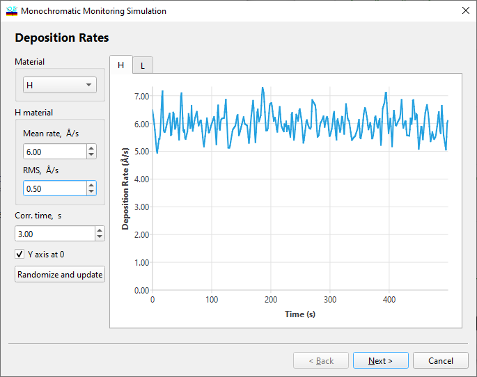

Monochromatic Monitoring Simulation - Deposition Rates
Monochromatic Monitoring Simulation - Deposition Rates
Navigation: OptiLayer Menu Commands > Analysis Menu > Monochromatic Monitoring Simulation >
Monochromatic Monitoring Simulation - Deposition Rates
` <monochromatic_monitoring.html>`__ ` <monochromatic_monitoring.html>`__ ` <single_par_deviations.html>`__

At the first step of the dialog, the user should specify the estimated mean values of deposition rates and the expected root mean square (rms) fluctuations of deposition rates for all layer materials used in the analyzed design. Typically, dependencies of deposition rates on time are stationary random processes with correlation times of several seconds. The “Fluctuations” entry field allows the user to specify the correlation times of deposition rates.
The “Rndm & Update” button enables the previewing of simulated dependencies of deposition rates on time. Rates corresponding to different materials can be selected using the tabs at the top of the window. Every time the “Rndm & Update” button is pressed, a new set of simulated data is generated.
The “Y axis at 0” checkbox controls the scale of the Y-axis on the preview screen.
See also: